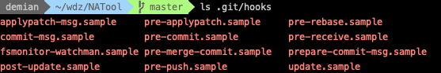

【基于Git hooks搭建前端工作流系列】一、方案选型
一、前言
这是基于Git hooks搭建前端工作流系列的第一篇，该篇主要介绍了功能背景和常见的基于 git hooks 的解决方案。
整个系列文章的目录如下：
一、方案选型：介绍现在主流的自动化方案。
二、使用 js 实现代码语法检测：介绍如何利用 nodejs api 做文件 diff 和代码检测。
三、引入插件化，集成和定制更多自动化功能：介绍如何将原来的脚本文件进行插件化，方便拓展功能和切换模板。
二、背景
以常见的代码评审流程为例：
发现问题往往需要到远端评审后才能发现，导致纠正问题的流程很长，而且评审者需要评审很多语法问题。
而如果基于git hooks，就可以将流程进行优化。通过在pre-commit钩子中执行 eslint 功能，就可以在代码提交前进行自动化检测。改造后的流程如下：
同样的，基于pre-commit等钩子，我们可以定制更多的自动化脚本，节约手动管理的时间。
三、Git hooks 介绍
官方介绍：
和其它版本控制系统一样，Git 能在特定的重要动作发生时触发自定义脚本。 有两组这样的钩子：客户端的和服务器端的。 客户端钩子由诸如提交和合并这样的操作所调用，而服务器端钩子作用于诸如接收被推送的提交这样的联网操作。 你可以随心所欲地运用这些钩子。
我们随意打开一个git仓库，查看目录下的.git文件夹

可以看到存在很多以 sample 为后缀的脚本文件，这些都是 git 提供的默认的脚本模板，去掉 sample 后缀，git 就会在对应的执行周期运行该脚本文件。
此处借用在《√ 了没？—— 介绍 Git Hooks》一文中看到的流程图来描述各个钩子的执行时期：

所以，我们可以通过实现同名的 git hook 脚本，在 git 提交的各个阶段实现自动化功能。
四、实现方案
这里仍然是以 eslint 检测为例，介绍常见的实现方案。
由于本系列文章主要是想介绍如何用原生 js 实现 git 工作流，所以在此不花太多篇幅介绍三方库的具体接入方式，只做简单的功能介绍。具体接入方式可自行查询三方库的使用文档或查看下方的参考资料。
1、husky + lint-staged
由于开发 git hooks 脚本文件需要一定的时间成本，所以可以借助 husky 库快速实现代码检测。该库会在.git/hooks目录中注入自己实现的 git 钩子文件，这些钩子文件被执行时会运行 package.json 中配置的命令，简单有效地达到自动化执行脚本的目的。
由于 husky 直接运行 eslint 会检查所有文件，所以会很慢。此时就需要借助 lint-staged 库，该库每次只检测改动过的文件，从而提升检测的速度。
优点：
1、节省开发脚本的时间。
2、由于是在 package 中集成了 husky 包，团队成员拉取项目 npm install 后就会自动安装钩子，从而保证各组员配置同步、统一。
缺点：
1、新旧项目都需要花时间接入 husky 和 lint-stage 等配置。
2、pre-commit
用法、优缺点同 husky 类似。
3、原生 js + vscode 插件/命令行工具
git 脚本默认用的是 bash 语法，需要一定的语法基础，对于前端开发人员不是很友好。所以我们可以使用 js 语法实现脚本文件，在这些文件中借助 nodejs api 实现不同的功能。
优点：
1、用户可以借助 vscode 插件/命令行将脚本文件拷贝到.git/hooks目录下，不用侵入每个项目的 package.json。通过插件可以实现vscode启动后自动为当前工作区的所有仓库注入脚本文件的效果，使得所有项目自动拥有相关功能。
2、借助 vscode 插件，可以完成不同自动化配置的动态切换。比如某些项目只用语法检测，某些项目则需要语法检测+commit信息检测+npm 包开源协议检测，此时通过 vscode 插件，就可以通过覆盖 hooks 文件夹的方式达到对不同项目进行适配和动态切换的效果。这个功能会在第三篇文章中介绍到。
缺点：
1、需要一定的时间开发相应的 git 脚本文件以及 vscode 插件。
2、如果不借助 vscode 插件，小组成员之间的配置难以统一管理。
五、总结
本文主要介绍了基于 Git hooks 搭建前端工作流的几种方案。husky+lint-staged 基本能覆盖全部的使用场景，所以是最推荐的一种方案。而在笔者所在的团队，由于开发了一套 vscode 插件，所以笔者采用了第三种方案。
因此，在后续的文章中，笔者将逐步介绍如何使用 js 开发 git 脚本文件，并借助vscode插件，实现一套自定义的、可配置的、易拓展的工作流方案。